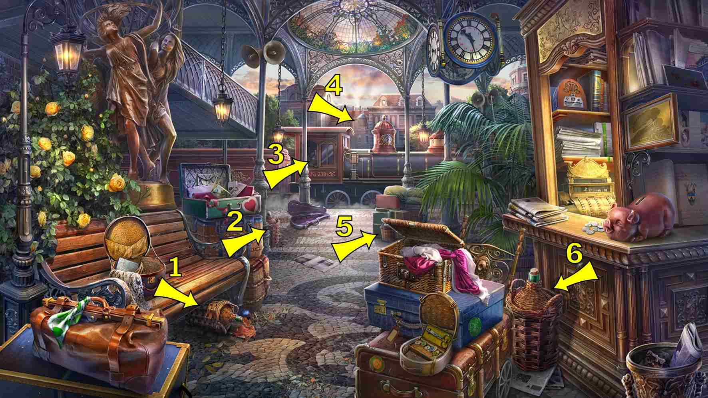
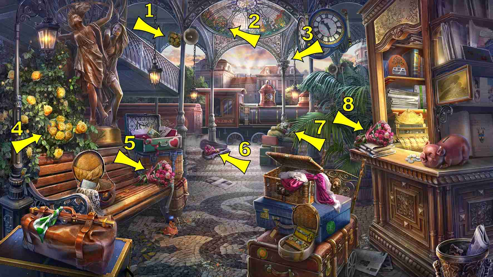
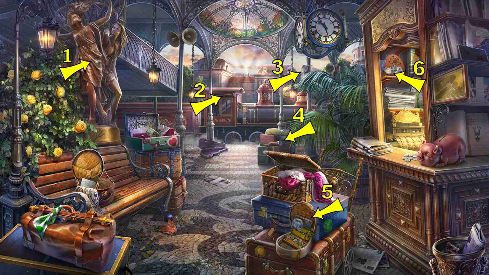
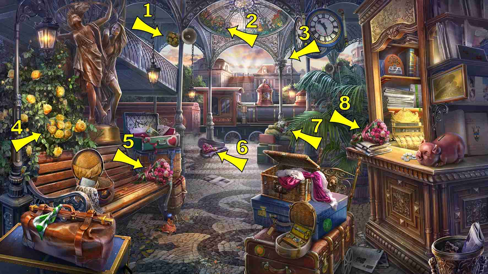
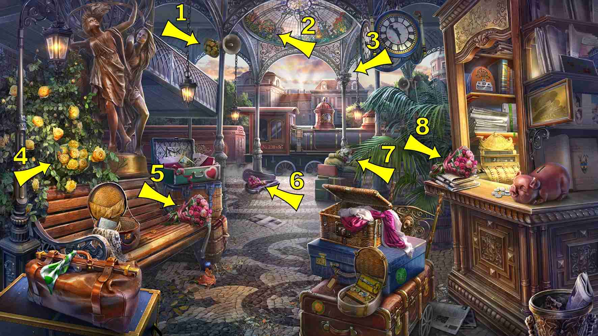
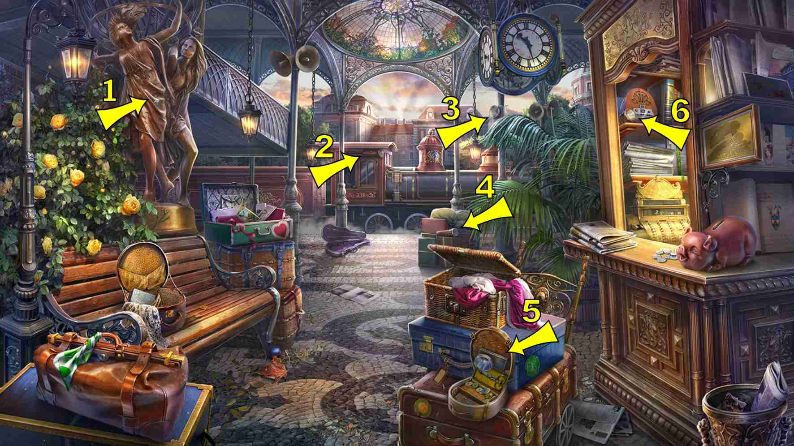
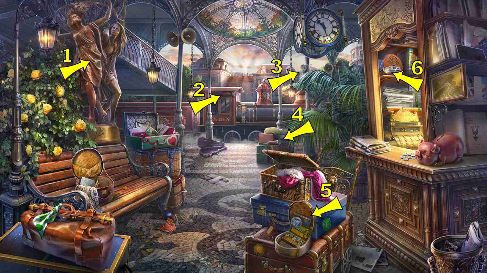

返回
Wiki
车站 Station
B扁壶
B扳手
B杯子
B贝壳
D地图
F风向玫瑰图
F风筝
F飞机
G鸽子
H怀表
H活动扳手
H活页笔记本
H火柴盒
H猴子
H花束
H蝴蝶
J吉他
J急救箱
L来福枪
L老鼠
M帽子
M灭火器
M猫
N鸟笼
P扑克牌
P瓶子
P瓶子
P票券
P苹果
Q曲奇
Q钱包
S双筒望远镜
S哨子
S扇子
S手套
S手电筒
S梳形发饰
S睡眠眼罩
T太阳
W玩具车
X信号杆
X心形
X相机
X靴子
Y摇铃
Y洋娃娃
Y烟斗
Y牙膏
Y眼镜
Y雨伞
Z折叠椅
Z纸风车
Z针织套装
H活动扳手 Adjustable Wrench
F飞机 Airplane
P苹果 Apple
P瓶子 Basket Flask

Y摇铃 Bell
S双筒望远镜 Binoculars
N鸟笼 Birdcage
X靴子 Boot
P瓶子 Bottle *
H花束 Bouquet

H蝴蝶 Butterfly
X相机 Camera
M猫 Cat
Q曲奇 Cookie
S梳形发饰 Decorative Comb
Y洋娃娃 Doll
Y眼镜 Eyeglasses
M灭火器 Fire Extinguisher
J急救箱 First Aid Kit
S手电筒 Flashlight *

Z折叠椅 Folding Chair
S手套 Glove
J吉他 Guitar
S扇子 Hand Fan
M帽子 Hat
X心形 Heart
B扁壶 Hip Flask
F风筝 Kite
Z针织套装 Knitting Set
D地图 Map
H火柴盒 Matchbox
H猴子 Monkey
L老鼠 Mouse
B杯子 Mug
G鸽子 Pigeon
Z纸风车 Pinwheel
Y烟斗 Pipe
P扑克牌 Playing Cards
H怀表 Pocket Watch
Q钱包 Purse
L来福枪 Rifle
B贝壳 Shell
X信号杆 Signal Baton
S睡眠眼罩 Sleep Mask
H活页笔记本 Spiral Notebook
T太阳 Sun
P票券 Ticket
Y牙膏 Toothpaste
W玩具车 Toy Car
Y雨伞 Umbrella
S哨子 Whistle
F风向玫瑰图 Wind Rose
B扳手 Wrench
 

 
